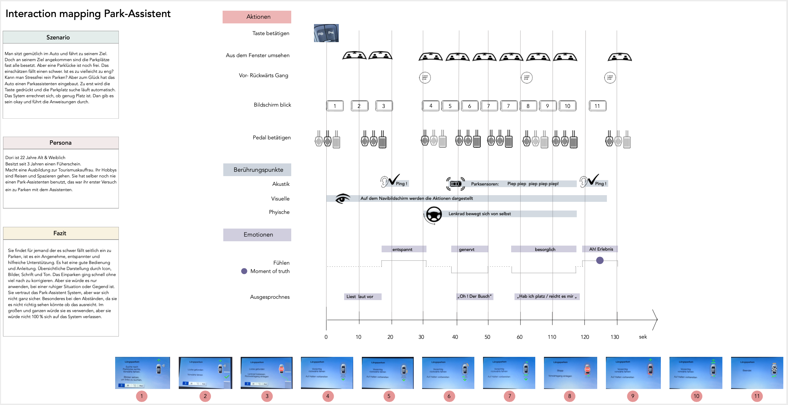

1. Semester - Design Grundlagen
Interaction Map
Die Aufgabe bestand darin eine Interaktion mit einen Proband durchzuführen.
Die Probanden sollten die Interaktion noch nie getest haben, es soll ein Erstbenutzung statt finden.
Wir sollten die Interaktion des Probanden beobachten, notieren und filmen.
Die Erkenntnis die wir daraus ziehen können, sollten wir in einer Interaction Map festhalten.
Ich ließ meine Probandin den Park-Assistent mit der Einparkfunktion vom Ford testen.
Auf Knopfdruck erkennt der Park-Assistent Ein- und Ausparkfunktion (Active Park Assist) durch Ultraschall-Sensoren
ausreichend große Parklücken in Längsrichting & manöviert das Fahrzeug hinein, während der Fahrer/in
nur Gas, Bremse und den Ganghebel bedienen muss.
Szenario
Ausgangssituation:
Man sitzt gemütlich im Auto & fährt zu dem gewünschten Zielort. Doch am Ziel angekeommen sind die Parkplätze
fast alle besetzt. Aber eine Parklücke ist noch frei!
 Das Ziel:
Das Ziel:

Entwicklung
Wie erwähnt ließ ich die funktion von meiner Probandin testen, ich nahm die Rolle des Beobachters ein, die Probandin
sollte laut aussprechen was sie denkt & fühlt. Um alles genau zu dokumentieren & im Nachhinein jeden Schritt
nachzuempfinden wurde die Probandin gefilmt und mit ein Interview am ende befragt.
Im nächsten Schritt wurde die ersten Entwürfe auf Papier gebracht, die wiederum weiterentwickelt und digitalisiert wurde.

Ergebnis
